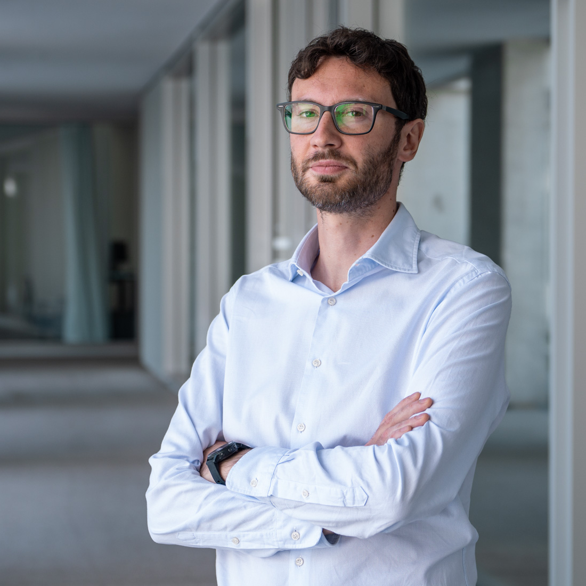

Researcher & Lecturer · IDSIA USI-SUPSI · Lugano
I work at the intersection of probabilistic machine learning, uncertainty quantification, and time series forecasting — with a particular focus on Gaussian processes and their applications to real-world predictive modeling problems.
Member of the Imprecise Probability Group at IDSIA, part of the Department of Innovative Technologies at SUPSI. Previously postdoctoral researcher at Idiap Research Institute. Ph.D. in Statistics, University of Bern, 2016.
dario.azzimonti [at] idsia.ch

Research
My research spans theoretical and applied dimensions of probabilistic machine learning. I work on problems in Bayesian inference, scalable computation, and decision-making under uncertainty.
Funding
My work has been supported by Innosuisse, the Swiss National Science Foundation (SNSF), and European research programs, in collaboration with academic institutions and industry partners.